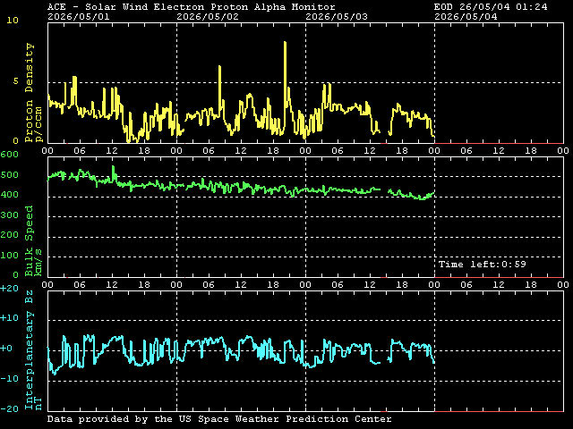
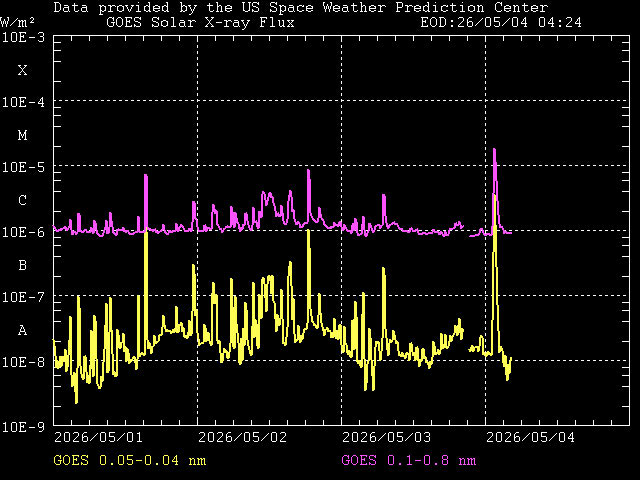
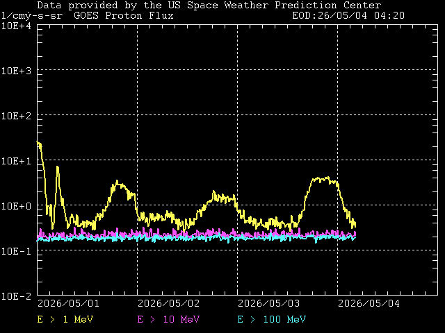
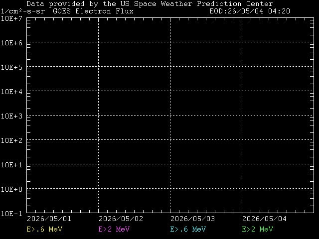
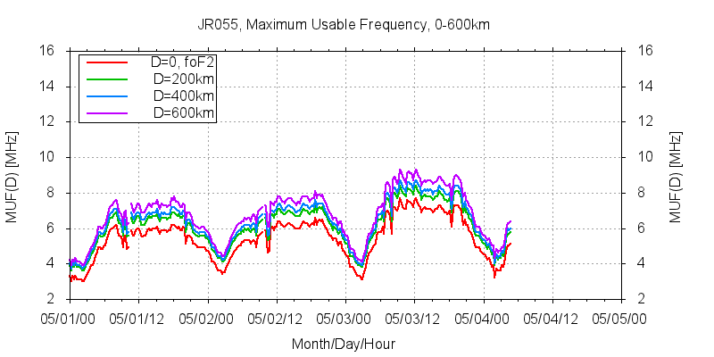
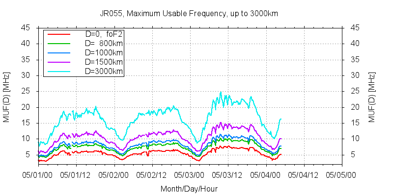
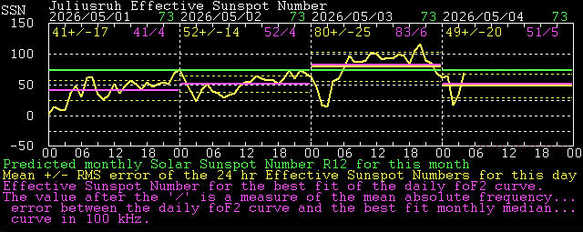
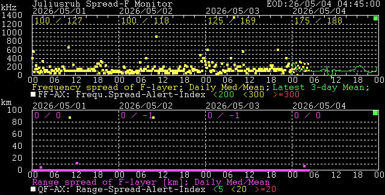
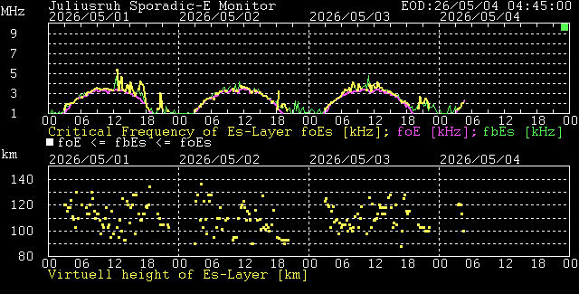
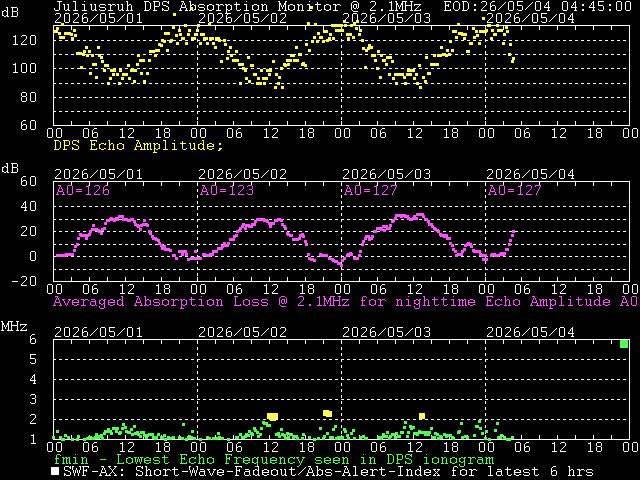

| 2026 | 03.05. | 04.05. 0448Z | ||
| SOL | -1/104 | M1.9 | - | - |
| MAG | Ak=11 | ak=7 | K=2 | |
| ION | 105% | 5.1 | 100% | - |




| JR055 MUF-Table 04.05.2026 - 04:45 UT Confidence level: 0 (11-very good, 55-poor) | |
|---|---|
| D[km] | MUF(D)[MHz] |
| 0 | 5.1 |
| 100 | 5.7 |
| 200 | 5.8 |
| 400 | 6.0 |
| 600 | 6.4 |
| 800 | 7.0 |
| 1000 | 7.8 |
| 1500 | 10.1 |
| 3000 | 16.2 |







| yesterday's day and month | today's day and month - update time (Z/UT) | |||
| solar activity | yesterday's SESC (Boulder/CO) sunspot number R corrected by 0.66 (for better comparison) / predicted monthly sunspot number R12 (green: low solar activity; yellow: moderate sol. act.; red: high sol. act.) | highest Xray-flux of the last 2 hours (green: A-, B-, C-class; yellow: M-class; red: X-class) | SWF detector if it occurs (green: no SWF; green 'MDE': SWF older than 2 hours; yellow: moderate SWF in the last 2 hours; red: strong SWF in the last two hours; flashing 'MDE': SWF in progress) | PCA detector if it occurs (green: no PCA; green 'PCA': PCA ending yesterday; yellow: moderate PCA (E>10MeV); red: strong PCA (E>100MeV); flashing 'PCA': PCA in progress) |
| geomagnetic activity | yesterday's Ak-Index (green: 0-15; yellow: 16-29; red: >=30) | today's running Ak-Index (green: 0-15; yellow: 16-29; red: >=30) | latest K-Index (green: 0-3; yellow: 4; red: 5-9) | (under construction) |
| ionospheric foF2 | yesterday's foF2-average relative to the longterm prediction | latest autoscaled vertical incidence foF2-value in MHz | relation between the latest foF2 and longterm prediction | descriptive letter which indicates the reason of an uncertain or impossible measurement (GREEN: accurate value; YELLOW: 'A' blanketing by Es, 'B' absorption, 'D' upper limit of frq.range, 'E' lower limit of frq.range, 'F' spread echoes, 'G' too low ionisation density, 'R' attenuation near foF2, 'S' interference, 'X' deduced from the x-component; RED: 'C' operational problem) |